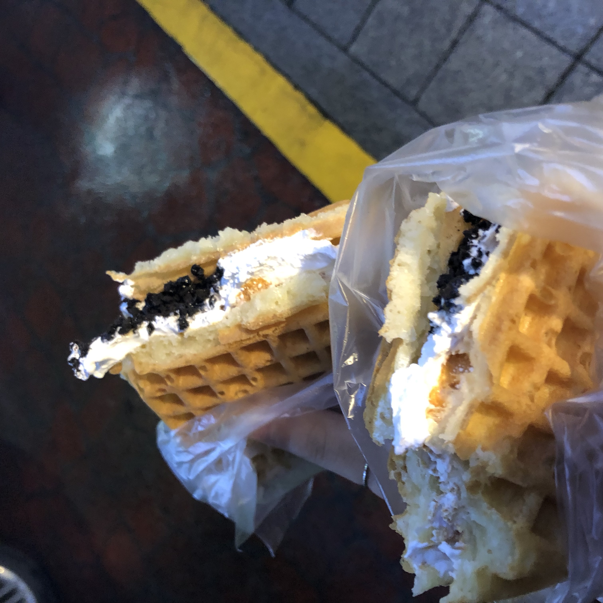

고시촌 미식회
바바플

바바플은 고시촌에 있는 와플집입니다.
가게가 작아 찾기가 어렵습니다.
보통 기본 와플에 토핑들이 추가 되는 느낌입니다.
가장 저렴한 와플은 우유생크림와플이며 가격은 1500원입니다.
하지만 주문과 동시에 제작이기 때문에 시간이 소요됩니다.
제가 추천해드리는 메뉴는 누텔라+바나나 와플입니다.
와플을 좋아하시는 분이라면 강추합니다.
주소 : 서울 관악구 호암로24길 55
고시촌 미식회 별점:★★★★
▲ 위 사진을 누르시면 바바플의 자세한 정보를 보실 수 있습니다.